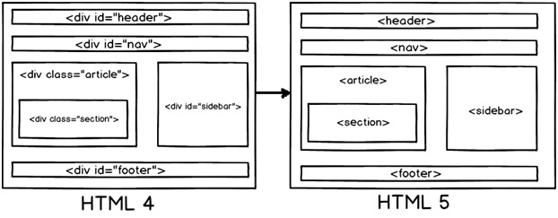

对WEB标准以及W3C的理解与认识
标签闭合、标签小写、不乱嵌套、提高搜索机器人搜索几率、使用外链css和js脚本、结构行为表现的分离、文件下载与页面速度更快、内容能被更多的用户所访问、内容能被更广泛的设备所访问、更少的代码和组件，容易维护、改版方便，不需要变动页面内容、提供打印版本而不需要复制内容、提高网站易用性。
xhtml和html有什么区别
- HTML是一种基本的WEB网页设计语言
- XHTML是一个基于XML的置标语言
最主要的不同：
- XHTML 元素必须被正确地嵌套。
- XHTML 元素必须被关闭。
- 标签名必须用小写字母。
- XHTML 文档必须拥有根元素。
什么是HTML5？
HTML5是最新的HTML标准，是万维网联盟（W3C）和网络超文本应用技术工作组（WHATWG）之间合作输出的.他的主要目标是提供所有内容而不需要任何的像flash，silverlight等的额外插件，这些内容来自动画，视频，富GUI等
SGML（标准通用标记语言）和HTML（超文本标记语言），XML（可扩展标记语言）和HTML的之间有什么关系？
SGML（标准通用标记语言）是一个标准，告诉我们怎么去指定文档标记。他是只描述文档标记应该是怎么样的元语言，HTML是被用SGML描述的标记语言。因此利用SGML创建了HTML参照和必须共同遵守的DTD，经常在HTML页面的头部标记“DOCTYPE”属性，用来定义用于解析目标DTD。现在解析SGML是一件痛苦的事情，所以创建了XML使事情更好。XML使用了SGML，例如：在SGML中你必须使用起始和结束标签，但是在XML你可以有自动关闭的结束标签。XHTML创建于XML，他被使用在HTML4.0中。
总之，SGML是所有类型的父类，较旧的HTML利用SGML，HTML4.0使用派生自XML的XHTML。
为什么HTML5里面我们不需要DTD（Document Type Definition文档类型定义）？
HTML5没有使用SGML或者XHTML，他是一个全新的东西，因此你不需要参考DTD，对于HTML5，你仅需放置下面的文档类型代码告诉浏览器识别这是HTML5文档
哪些浏览器支持HTML5？
几乎所有的浏览器Safari，Chrome，Firefox，Opera，IE都支持HTML5 XHTML
HTML5的页面结构同HTML4或者更前的HTML有什么区别？
- 一个典型的WEB页面包含头部，脚部，导航，中心区域，侧边栏。现在如果我们想在在HTML4的HTML区域中呈现这些内容，我们可能要使用DIV标签。
- 在HTML5中通过为这些区域创建元素名称使他们更加清晰，也使得你的HTML更加可读

以下是形成页面结构的HTML5元素的更多细节：
- header：代表HTML的头部数据
- footer：页面的脚部区域
- nav：页面导航元素
- article：自包含的内容
- section：使用内部article去定义区域或者把分组内容放到区域里
- aside：代表页面的侧边栏内容
什么是SVG（Scalable Vector Graphics可缩放矢量图形）？
SVG（Scalable Vector Graphics可缩放矢量图形）表示可缩放矢量图形。他是基于文本的图形语言，使用文本，线条，点等来进行图像绘制，这使得他轻便，显示更加迅速
Doctype作用? 严格模式与混杂模式-如何触发这两种模式，区分它们有何意义?
- !DOCTYPE 声明位于文档中的最前面，处于 html 标签之前。告知浏览器的解析器，用什么文档类型 规范来解析这个文档。
- 严格模式的排版和 JS 运作模式是 以该浏览器支持的最高标准运行。
- 在混杂模式中，页面以宽松的向后兼容的方式显示。模拟老式浏览器的行为以防止站点无法工作。
- DOCTYPE不存在或格式不正确会导致文档以混杂模式呈现。
行内元素有哪些？块级元素有哪些？ 空(void)元素有那些？
- CSS规范规定，每个元素都有display属性，确定该元素的类型，每个元素都有默认的display值，比如div默认display属性值为“block”，成为“块级”元素；span默认display属性值为“inline”，是“行内”元素。
- 行内元素有：a b span img input select strong（强调的语气） 块级元素有：div ul ol li dl dt dd h1 h2 h3 h4…p
-
知名的空元素：br hr img input link meta
鲜为人知的是： area base col command embed keygen param source track wbr
CSS的盒子模型有哪些
- 两种， IE 盒子模型、标准 W3C 盒子模型；IE 的content部分包含了 border 和 pading;
- 盒模型： 内容(content)、填充(padding)、边界(margin)、 边框(border).
link 和@import 的区别是?
- link属于XHTML标签，而@import是CSS提供的;
- 页面被加载的时，link会同时被加载，而@import引用的CSS会等到页面被加载完再加载;
- import只在IE5以上才能识别，而link是XHTML标签，无兼容问题;
- link方式的样式的权重 高于@import的权重.
CSS 选择符有哪些？哪些属性可以继承？优先级算法如何计算？ CSS3新增伪类有那些？
-
- id选择器（ # myid）
- 类选择器（.myclassname）
- 标签选择器（div, h1, p）
- 相邻选择器（h1 + p）
- 子选择器（ul
< li）
- 后代选择器（li a）
- 通配符选择器（ * ）
- 属性选择器（a[rel = "external"]）
- 伪类选择器（a: hover, li: nth - child）
- 可继承： font-size font-family color, UL LI DL DD DT;
- 不可继承 ：border padding margin width height ;
- 优先级就近原则，样式定义最近者为准;
- 载入样式以最后载入的定位为准;
优先级为:
- !important > id > class > tag
- important 比 内联优先级高
CSS3新增伪类举例：
- p:first-of-type 选择属于其父元素的首个 p 元素的每个 p 元素。
- p:last-of-type 选择属于其父元素的最后 p 元素的每个 p元素。
- p:only-of-type 选择属于其父元素唯一的 p 元素的每个 p 元素。
- p:only-child 选择属于其父元素的唯一子元素的每个 p 元素。
- p:nth-child(2) 选择属于其父元素的第二个子元素的每个 p 元素。
- :enabled、:disabled 控制表单控件的禁用状态。
- :checked，单选框或复选框被选中。
前端页面有哪三层构成，分别是什么?作用是什么?
- 结构层 Html:整体网页的布局结构
- 表示层 CSS：网页各个结构的表象样式
- 行为层 js：一些动态的样式
css的基本语句构成是?
选择器{属性1:值1;属性2:值2;……}
有哪些主流浏览器?这些浏览器的内核分别是什么?
Ie(Ie内核) 火狐(Gecko) 谷歌(webkit) opear(Presto)
写出几种IE6 BUG的解决方法
- 双边距BUG float引起的 使用display
- 3像素问题 使用float引起的 使用dislpay:inline -3px
- 超链接hover 点击后失效 使用正确的书写顺序 link visited hover active
- Ie z-index问题 给父级添加position:relative
- Png 透明 使用js代码 改
- Min-height 最小高度 !Important 解决
- select 在ie6下遮盖 使用iframe嵌套
- 为什么没有办法定义1px左右的宽度容器(IE6默认的行高造成的，使用over:hidden,zoom:0.08 line-height:1px)
- ie 6 不支持!important
img标签上title与alt属性的区别是什么?
- Alt 当图片不显示是 用文字代表。
- Title 为该属性提供信息
解释css sprites，如何使用。
把一堆小的图片整合到一张大的图片上，减轻服务器对图片的请求数量
清除浮动的几种方式，各自的优缺点
- 使用空标签清除浮动 clear:both(理论上能清楚任何标签，，，增加无意义的标签)
- 使用overflow:auto(空标签元素清除浮动而不得不增加无意代码的弊端,,使用zoom:1用于兼容IE)
- 是用afert伪元素清除浮动(用于非IE浏览器)
css hack
- _marging \\IE 6
- +margin \\IE 7
- Marging:0 auto \9 所有Ie
- Margin \0 \\IE 8
CSS引入的方式有哪些
内联 内嵌 外链 导入